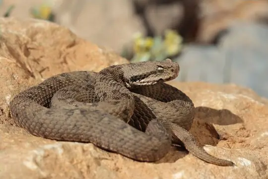
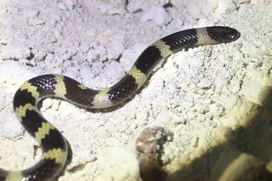

Snakes of Syria
33 snake species are recorded in Syria in SnakeList: 9 venomous and 24 non-venomous, from 7 families.
- 33species
- 9venomous
- 24non-venomous
- 7families
Species
Showing 33 species
 Asian RacerHemorrhois nummifer
Asian RacerHemorrhois nummifer Awl-headed SnakeLytorhynchus diadema
Awl-headed SnakeLytorhynchus diadema Baran Dwarf RacerEirenis barani
Baran Dwarf RacerEirenis barani Black-headed Snake (nigriceps)Telescopus nigriceps
Black-headed Snake (nigriceps)Telescopus nigriceps Cat SnakeTelescopus fallax
Cat SnakeTelescopus fallax Crowned Dwarf RacerEirenis coronella
Crowned Dwarf RacerEirenis coronella Eiselt's Dwarf RacerEirenis eiselti
Eiselt's Dwarf RacerEirenis eiselti Field's Horned ViperPseudocerastes fieldi
Field's Horned ViperPseudocerastes fieldi Israeli Worm SnakeLetheobia simoni
Israeli Worm SnakeLetheobia simoni- No photo yetKennedy's Leafnose SnakeLytorhynchus kennedyi
 Large Whip Snake (jugularis)Dolichophis jugularis
Large Whip Snake (jugularis)Dolichophis jugularis
Lebanon ViperMontivipera bornmuelleri Levantine Dwarf SnakeEirenis levantinus
Levantine Dwarf SnakeEirenis levantinus Levantine ViperMacrovipera lebetinus
Levantine ViperMacrovipera lebetinus Long-nosed Worm SnakeLetheobia episcopus
Long-nosed Worm SnakeLetheobia episcopus Moila SnakeMalpolon moilensis
Moila SnakeMalpolon moilensis Mount Bulgar ViperMontivipera bulgardaghica
Mount Bulgar ViperMontivipera bulgardaghica
Muller's Snake (muelleri)Micrelaps muelleri Narrow-striped Dwarf SnakeEirenis decemlineatus
Narrow-striped Dwarf SnakeEirenis decemlineatus Palestine ViperDaboia palaestinae
Palestine ViperDaboia palaestinae Persian Horned ViperPseudocerastes persicus
Persian Horned ViperPseudocerastes persicus Red Whip Snake (collaris)Platyceps collaris
Red Whip Snake (collaris)Platyceps collaris Red-Bellied RacerDolichophis schmidti
Red-Bellied RacerDolichophis schmidti Red-headed whip-snakeColuber rubriceps
Red-headed whip-snakeColuber rubriceps Rogers' RacerPlatyceps rogersi
Rogers' RacerPlatyceps rogersi Roth's Dwarf SnakeEirenis rothii
Roth's Dwarf SnakeEirenis rothii Sand Boa (jaculus)Eryx jaculus
Sand Boa (jaculus)Eryx jaculus- No photo yetSinai dwarf racerEirenis coronelloides
 Spotted Whip SnakeHemorrhois ravergieri
Spotted Whip SnakeHemorrhois ravergieri Striped Dwarf SnakeEirenis lineomaculatus
Striped Dwarf SnakeEirenis lineomaculatus Syrian Blind SnakeXerotyphlops syriacus
Syrian Blind SnakeXerotyphlops syriacus Transcaucasian Rat SnakeZamenis hohenackeri
Transcaucasian Rat SnakeZamenis hohenackeri- No photo yetWalterinnesia morgani
No snakes in Syria match.
Syria’s snakes in numbers
- Families: Colubridae 20, Viperidae 6, Typhlopidae 3, Atractaspididae 1, Boidae 1, Elapidae 1, Psammophiidae 1.